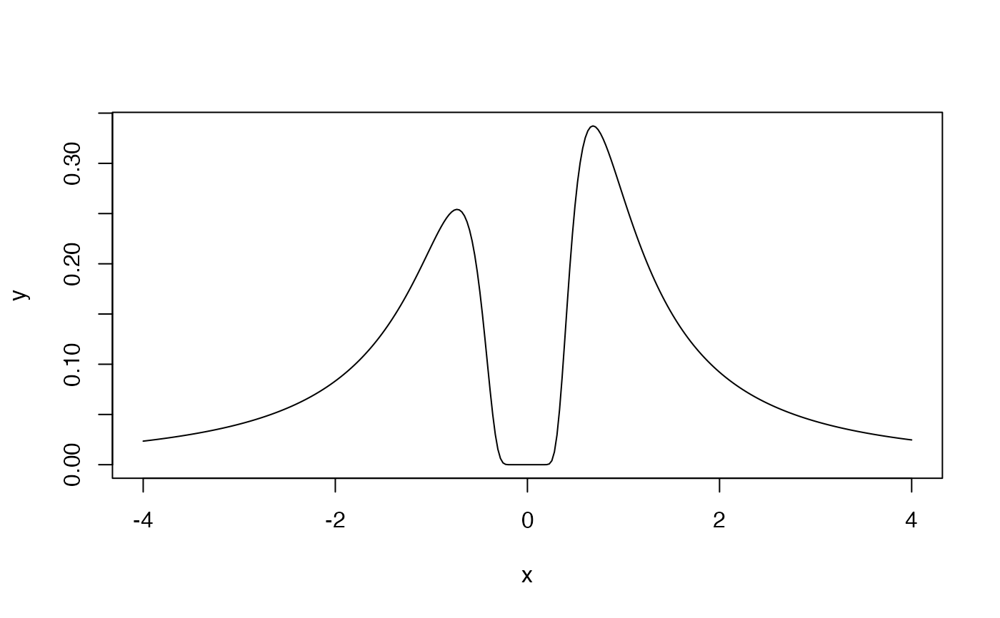
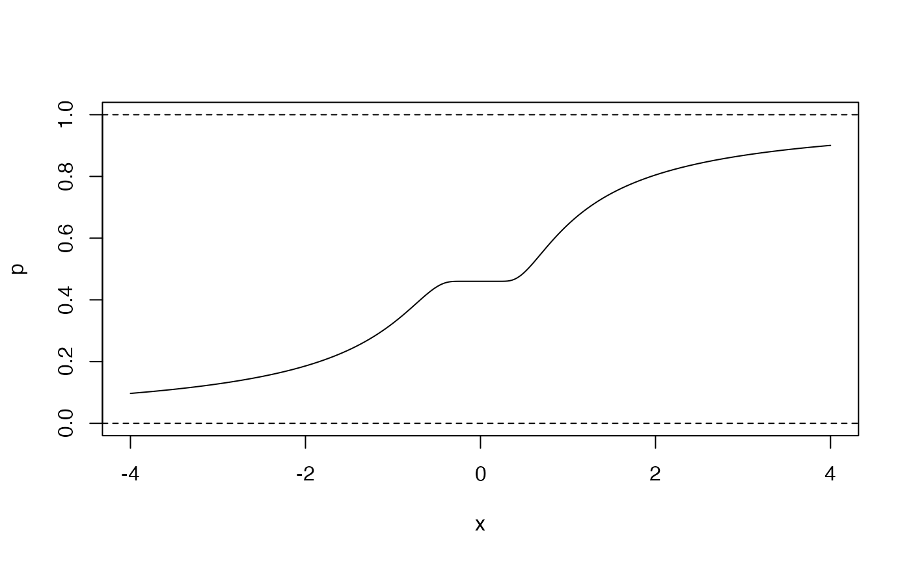

Density, distribution function, quantile function, and random generation for the inverse normal distribution when parameterized by the mean and standard deviation of the inverse (reciprocal).
Usage
dinvnorm(x, imean = 0, isd = 1, log = FALSE)
pinvnorm(q, imean = 0, isd = 1, lower.tail = TRUE, log.p = FALSE)
qinvnorm(p, imean = 0, isd = 1)
rinvnorm(n, imean = 0, isd = 1)Value
Either a random sample (rinvnorm),
the density (dinvnorm), the tail
probability (pinvnorm), or the quantile
(qinvnorm) of the inverse normal distribution.
Functions
dinvnorm(): Density function.pinvnorm(): Probability function.qinvnorm(): Quantile function.rinvnorm(): Random generation.
References
Robert, C. (1991). Generalized inverse normal distributions. Statistics & Probability Letters, 11(1), 37-41. doi:10.1016/0167-7152(91)90174-P
Examples
x <- seq(-4, 4, length.out = 300)
y <- dinvnorm(x = x, imean = 0.1, isd = 1)
graphics::plot(x, y, type = "l")

p <- pinvnorm(q = x, imean = 0.1, isd = 1)
graphics::plot(x, p, type = "l", ylim = c(0, 1))
graphics::abline(h = c(0, 1), lty = 2)

qinvnorm(p = c(0.025, 0.5, 0.975), imean = 0.1, isd = 1)
#> [1] -15.8174950 0.5397565 15.9175947
s <- rinvnorm(n = 10000, imean = 0.1, isd = 1)
stats::quantile(s, c(0.025, 0.5, 0.975))
#> 2.5% 50% 97.5%
#> -16.0751364 0.5406827 16.9588023